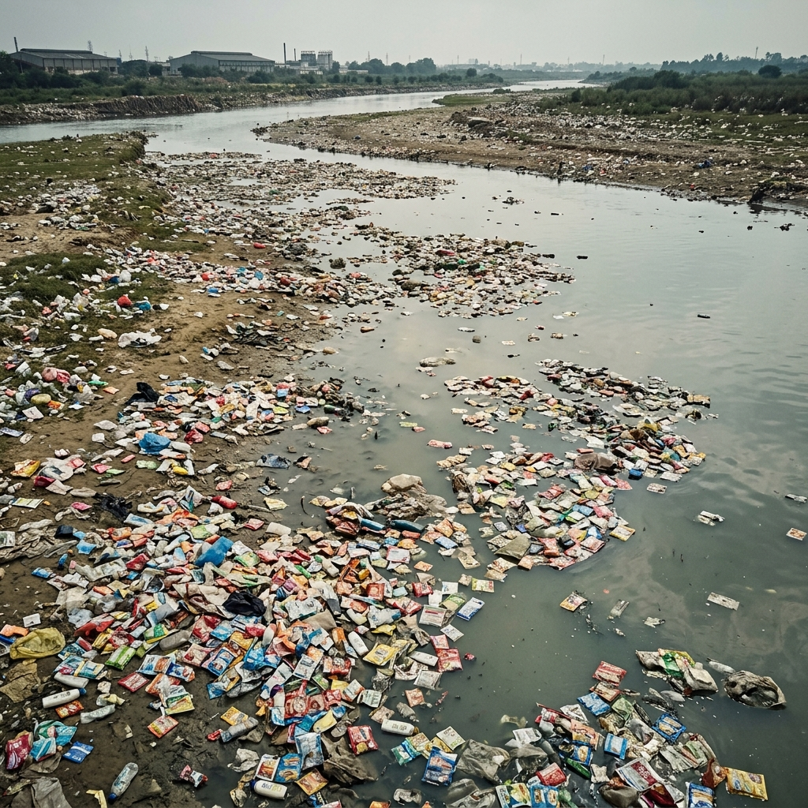
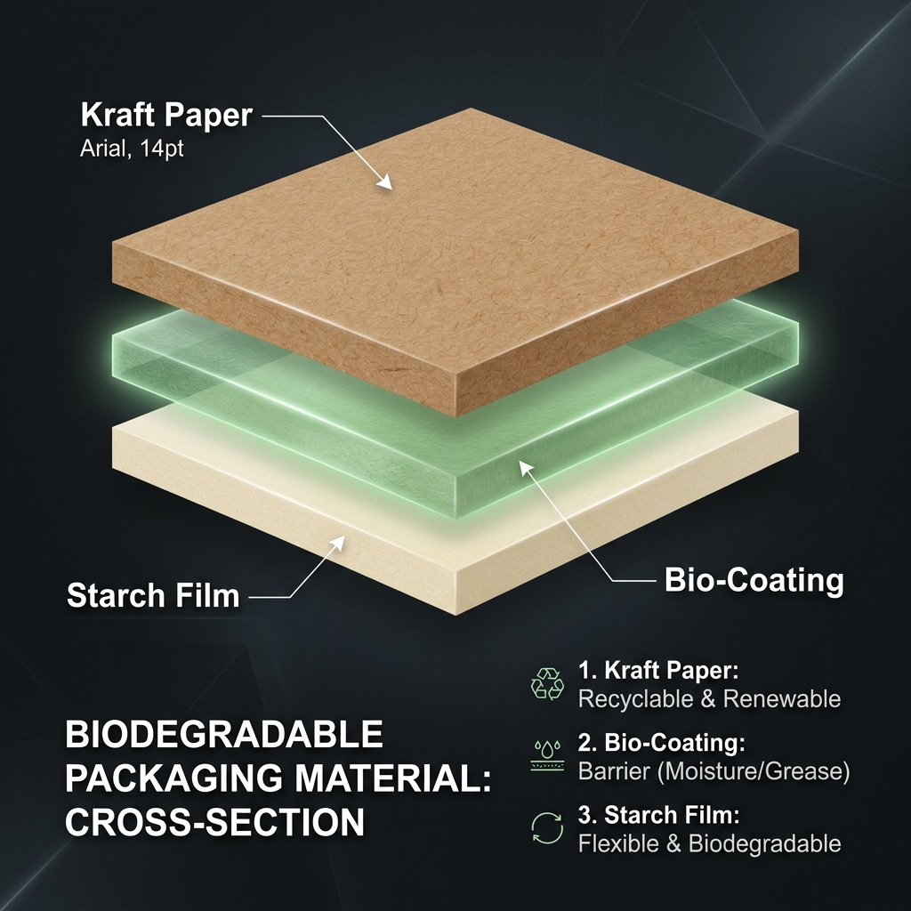
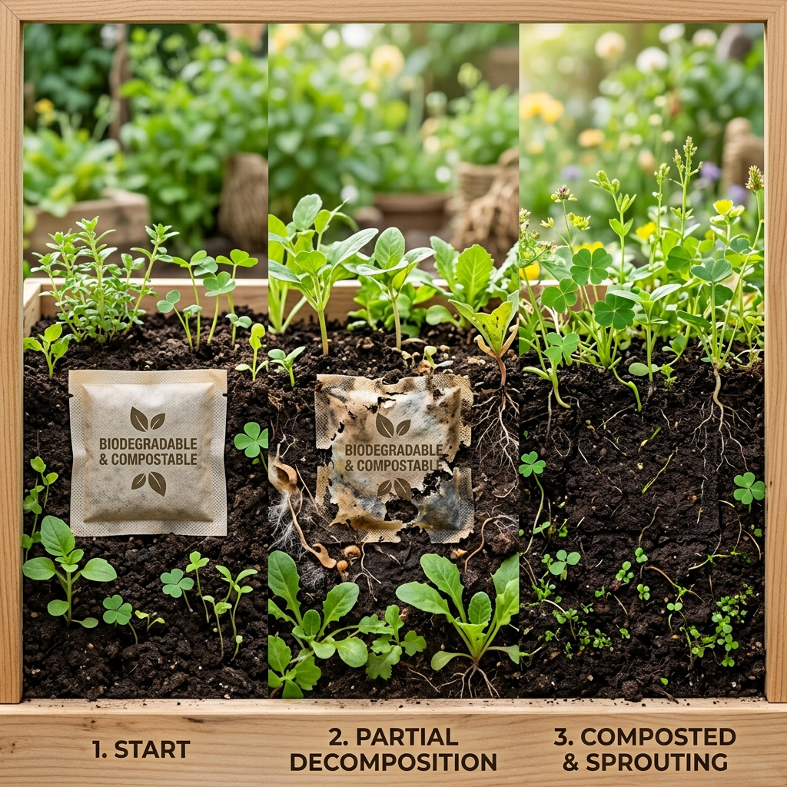

EcoSachet
A biodegradable, plastic-free sachet packaging solution replacing conventional non-recyclable plastic laminates. Multi-layer bio-composite structure delivering moisture resistance, durability, and rapid environmental degradation.
Pan masala and gutkha industries generate billions of single-use plastic sachets annually. These non-biodegradable, multi-layer plastic structures persist in our environment for over 100 years.

Plastic sachets persist in the environment for over 100 years, contaminating soil and water systems.
Multi-layer laminated plastic structures make recycling virtually impossible with current technology.
Small form factor leads to widespread littering — sachets are the #1 category of plastic waste found in urban areas.
Current alternatives fail to match cost-efficiency, usability, and manufacturability of plastic sachets.
A three-layer biodegradable structure engineered to replicate and exceed plastic laminate performance while ensuring complete environmental decomposition. Scroll to explode the layers.

Provides structural strength, excellent printability for branding, and serves as the primary protective barrier.
Core innovation — delivers advanced moisture and oxygen resistance using bio-derived coating materials.
Food-safe sealant layer enabling heat-sealing compatibility with existing FFS packaging machines.
EcoSachet matches every functional requirement of conventional plastic sachets while exceeding environmental standards.
Fully biodegrades within 60 to 120 days, leaving zero microplastic residue in the environment.
Advanced bio-coating barrier prevents moisture ingress, supporting a 3–6 month shelf life.
Compatible with existing Form-Fill-Seal (FFS) machines with minimal calibration adjustments.
Supports high-speed packaging lines used in FMCG manufacturing without workflow changes.
Inner starch-based biopolymer film meets food-grade safety standards for direct product contact.
Optimized tear mechanics for consumer convenience — identical usability to traditional sachets.
Our manufacturing process integrates seamlessly with existing packaging infrastructure, requiring only minor adjustments.
Sourcing kraft paper, bio-polymers (PLA/PHA), and starch-based films from certified suppliers.
Roll-to-roll coating technique bonds the three bio-composite layers with optimized adhesion.
Laminated material wound into packaging rolls compatible with standard FFS machines.
Rolls fed into existing Form-Fill-Seal machines with calibrated sealing temperature profiles.
Products filled and heat-sealed at optimized temperatures for biodegradable film integrity.
Experience EcoSachet's biodegradation process. Drag the slider to simulate 120 days of natural decomposition — with dissolve, color shift, and new growth.

EcoSachet doesn't just reduce harm — it actively contributes to environmental recovery through complete biodegradation.
Leaves no microplastic residue upon decomposition
85% reduction compared to conventional plastic sachets
Composts naturally, drastically reducing landfill accumulation
A structured approach from prototype validation to industrial-scale deployment across FMCG sectors.
Our multi-layer bio-composite is engineered for manufacturing scale, with clear pathways to cost parity through optimization and subsidies.
Volume discounts on bio-materials through strategic supplier partnerships
Reduced logistics costs with decentralized production facilities
Roll-to-roll coating & high-speed lamination for efficiency
Leverage EPR credits and sustainable packaging incentives
Enhanced coating thickness and multi-material barrier optimization
Multi-layer optimization with PHA/chitosan-based barrier formulations
Scale manufacturing, government subsidies, and process automation
Calibration adjustments and compatibility testing with FFS vendors
Low-cost, high-speed packaging compatibility with existing production lines. Meet regulatory requirements effortlessly.
Identical convenience, durability, and usability. Experience guilt-free consumption with eco-conscious packaging.
Accelerates compliance with single-use plastic bans and EPR mandates. Clear certification pathway.
Dramatically reduces non-recyclable waste volume. Sachets compost naturally without special infrastructure.
Partner with us to bring biodegradable packaging to your product line. Whether you're a manufacturer, investor, or sustainability advocate — let's make it happen.